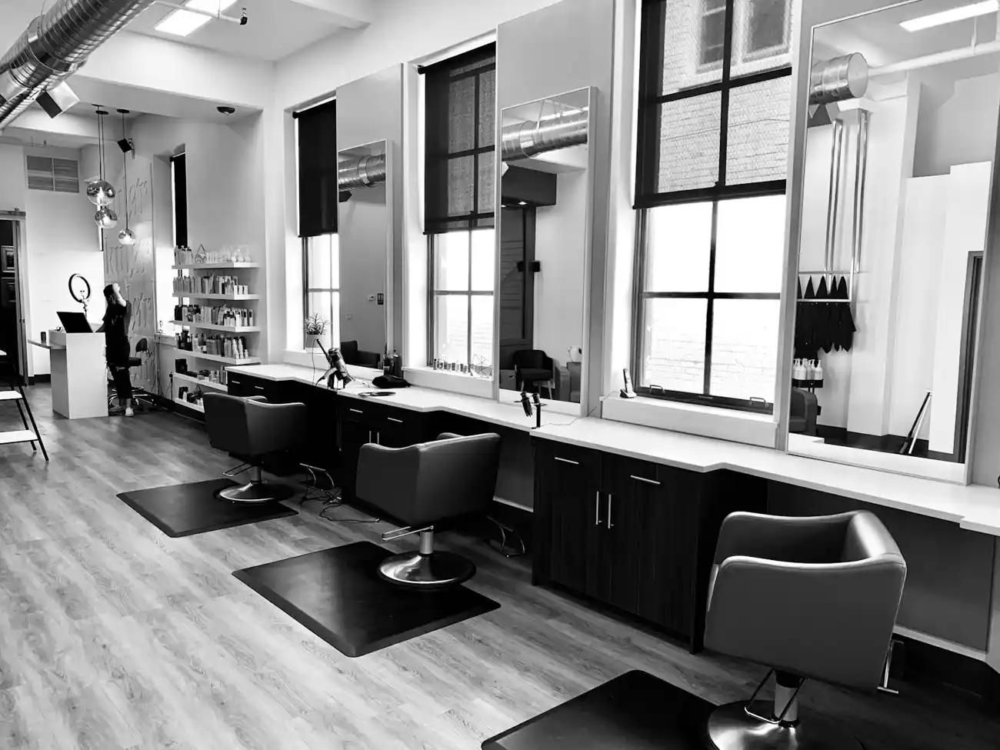

01
01مو و رنگ
Hair Atelier
یک تغییر ظریف، یک حس تازه، یک قرار با خودت. در مهلا از سلیقهٔ تو شروع میکنیم و به جزئیات میرسیم.
 BEAUTY, IN YOUR OWN WAY
BEAUTY, IN YOUR OWN WAYاز مو و میکاپ تا جزئیات ناخن و مراقبت؛ مسیری را انتخاب کن که به سلیقهٔ تو نزدیکتر است.
01 02
02 03
03 04
04

زیبایی برای ما از شناخت تو آغاز میشود؛ از چیزی که دوست داری، تغییری که در ذهن داری و حسی که میخواهی با خودت ببری.
مهلا تصویری از یک فضای گرم و دقیق است؛ جایی برای مکث و توجه به خودت، میان شلوغی روزها.
تصاویر آرشیوی برای الهام بصری؛ نمونهکار واقعی سالن نیستند.
از اولین تصویر الهام تا هماهنگی زمان و جزئیات؛ فرصتی برای اینکه پیش از روز مراسم، انتخابهایت روشن باشند.
آشنایی با تجربهٔ عروسلازم نیست از ابتدا همهٔ انتخابها را بدانی. سلیقه و انتظار خودت را بگو.
درخواست زمان مشاورهتصاویر دلخواه و حسی را که دنبال میکنی مطرح کن.
دربارهٔ روش، مراحل و جزئیات موردنظرت بپرس.
زمان و نکتههای پیش از دریافت خدمات را روشن کنیم.
نگاه مهلا به زیبایی
مو و استایلاز تصاویر الهام تا واقعیت موی شما؛ چند نکته برای یک گفتوگوی دقیقتر.
خواندن مطلبمیکاپ و مراسملباس، نور، زمان و سلیقهٔ شخصی؛ چیزهایی که به انتخاب سبک کمک میکنند.
خواندن مطلبالهام و جزئیاتچطور رنگ و فرم ناخن را در کنار لباس و زیورآلات انتخاب کنیم؟
خواندن مطلبدر صفحهٔ رزرو، خدمت و زمان پیشنهادی را انتخاب کنید. فرم این نمونهکار نمایشی است و درخواست واقعی ارسال نمیکند.
خیر. در نسخهٔ واقعی، زمان باید از طریق پذیرش یا سامانه تأیید شود. در این نمونهکار نوبتی ثبت نمیشود.
راه ارتباط با پذیرش و شرایط تغییر نوبت در نسخهٔ عملیاتی تکمیل میشود. پیش از قطعی کردن زمان، شرایط را بپرسید.
گزینهٔ «مشاورهٔ اولیه» را انتخاب کنید و دربارهٔ تغییر یا نتیجهٔ دلخواهتان صحبت کنید.
خدمت دلخواهت را انتخاب کن یا با یک گفتوگوی اولیه شروع کن.